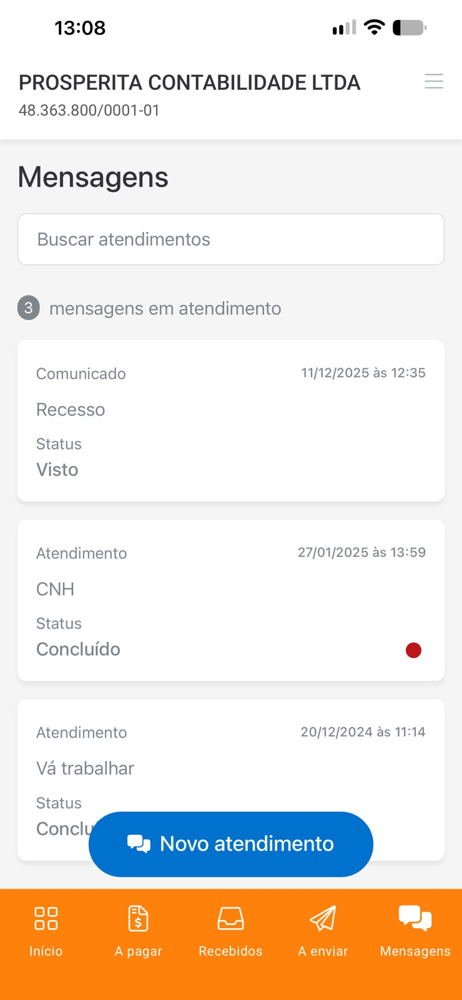
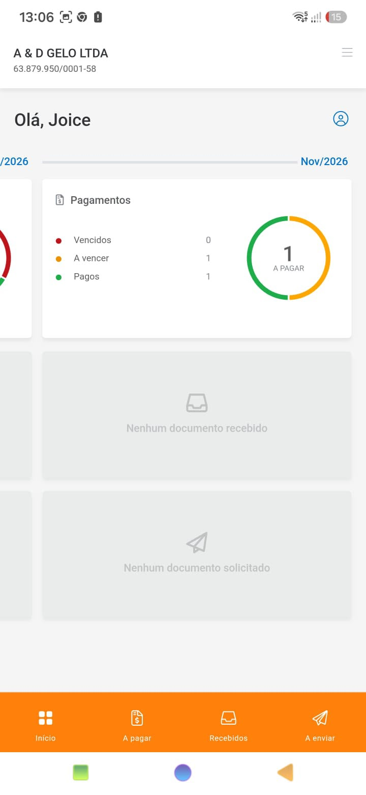

Simples Nacional
Orientação e acompanhamento das obrigações no regime.
Contabilidade especializada para prestadores de serviços: mais liberdade profissional, tecnologia, inteligência tributária e controle dos resultados da sua empresa.
Você presta serviços. Nós cuidamos da sua contabilidade.
Quero simplificar minha rotina ↗Atendemos diferentes formatos de empresas e profissionais, considerando atividade, regime tributário e evolução do negócio.
Orientação e acompanhamento das obrigações no regime.
Assessoria para empresas enquadradas no regime.
Empresários individuais, sociedades empresárias e profissionais liberais com CNPJ.
Com o aplicativo próprio da Prosperitá, você emite suas Notas Fiscais de Serviços Eletrônicas (NFS-e) diretamente pelo celular, em apenas três passos.
Busque pelo nome ou documento e selecione o cliente da nota.
Comece uma nova nota ou repita dados de uma emissão anterior.
Informe os dados do serviço e siga as etapas da emissão no aplicativo.
Sem precisar acessar o portal da prefeitura, sem depender de computador e com mais autonomia para emitir NFS-e de onde estiver.
A funcionalidade contempla exclusivamente notas fiscais de serviços (NFS-e), não notas fiscais de venda de mercadorias.

Faturamento não é lucro. Saldo bancário não é resultado financeiro. O fechamento contábil trimestral ajuda a ter uma visão mais clara da situação patrimonial, econômica e financeira.
Demonstração da posição patrimonial da empresa.
Visão organizada das receitas, custos e despesas e do resultado contábil.
Acompanhamento dos componentes que formam o resultado.
Acompanhamento da evolução patrimonial ao longo dos períodos.
Fundamentação contábil para orientar a distribuição de lucros.
Não espere o ano terminar para compreender os resultados da sua empresa.
Uma tributação inadequada pode comprometer significativamente a rentabilidade do negócio. Não basta calcular impostos: é preciso entender a estratégia por trás de cada apuração.
Análise e avaliação entre Simples Nacional e Lucro Presumido.
Acompanhamento do Fator R, quando aplicável, e análise dos anexos do Simples Nacional.
Orientação sobre pró-labore e distribuição de lucros.
Identificação de oportunidades legais de economia tributária.
Análise das retenções tributárias incidentes sobre serviços.
Com a tecnologia Open Finance, mediante sua autorização, os extratos bancários da empresa podem ser integrados diretamente à contabilidade.



Emissão de NFS-e diretamente pelo celular.
Acesso às guias e acompanhamento de vencimentos.
Consulta de documentos contábeis e fiscais disponibilizados.
Mensagens e atendimentos com a equipe.
Contábil, fiscal, tributária e Departamento Pessoal.
Acompanhamento de acordo com as necessidades da sua empresa.
Tenha mais tempo para atender seus clientes, aumentar seu faturamento e desenvolver sua atividade profissional.
Uma contabilidade que trabalha para o desenvolvimento do seu negócio.
Conte o que você precisa. Nossa equipe vai entender seu cenário e orientar o atendimento.
Converse com nossa equipe e descubra o acompanhamento adequado para sua empresa.